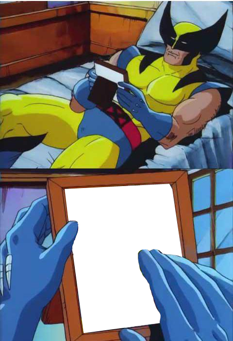
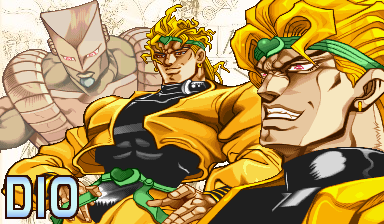

Meme Mashup
What's a Meme?
A meme is "a cultural idea or behavior that spreads between people without genes being involved" (SciShow 2017). They come in many different forms - photo edits, cartoon panels, short videos, audio clips, etc. and are a way people express creativity, spread ideas, and create jokes. Sometimes memes are spliced or mashed together to represent a new idea.
Memes
I used Photoshop to mash together 3 different memes to create a piece about Dio Brando from JoJo's Bizarre Adventure: Phantom Blood.


Meme Mashup

Spoilers for JoJo's Bizarre Adventure: Phantom Blood.
At the end of the season, Dio Brando is left as a headless vampire who decides to steal Jonathan's body as a replacement for his own. After cornering Jonathan aboard a cruise ship by setting it on fire, Dio has one last battle against Jonathan.
The This is Fine meme is used to highlight Dio's insane plan to restore himself to glory, as well as reflect the literal fire the finale takes place in.
Wolverine Crush is used to emphasize how obsessed Dio is with Jonathan, to the point where he determines that the only thing worthy of replacing his body is Jonathan's body.